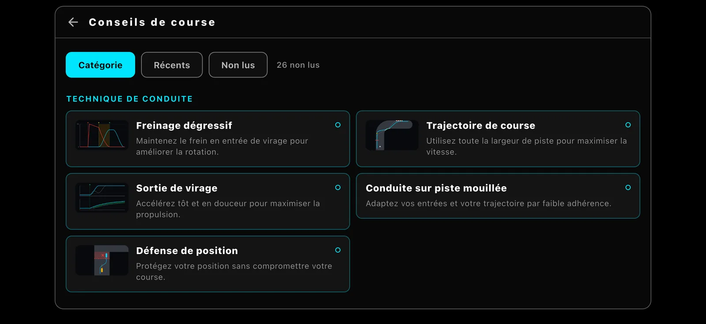
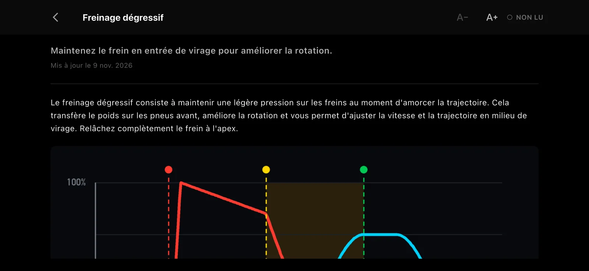
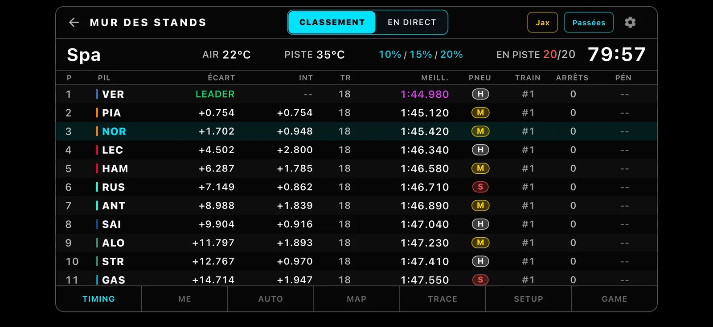
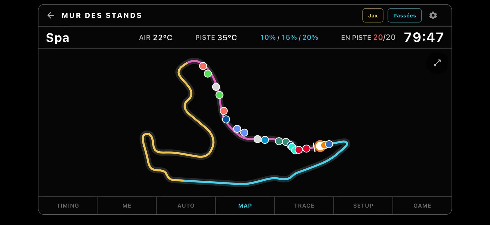

Jamais publiées
Vos réglages, vos traces de tour et votre historique de course ne sont jamais affichés dans un classement ni partagés avec d'autres pilotes.
Compagnon de sim racing pour iPhone
Votre téléphone devient votre tableau de bord en direct, ou le mur des stands à côté de votre cockpit. Jax Max Delta transforme la télémétrie F1 en direct en assistance en piste — et garde la mémoire de chaque session pour mieux vous préparer à la suivante.
Préparer la session à Spa — la carte, puis virage par virage
Avant · Pendant · Après
Jax Max Delta vous suit tout au long de la session : ce qu'il faut savoir avant de quitter le garage, ce qui compte pendant que vous pilotez, et ce qui s'est vraiment passé une fois la course terminée.
Avant
Choisissez le circuit et la voiture, puis étudiez le tracé, les virages, les pneus, les notes de réglages et votre propre historique.
Pendant
Un tableau de bord en direct, Jax à la radio et un mur des stands complet — lisibles d'un coup d'œil sur votre téléphone.
Après
Chaque session enregistrée sur votre appareil : résultats, réglages, conditions, traces de tour — et la reprise de votre course.
Avant · Préparer la session
Préparer la session réunit la connaissance du circuit et votre propre historique. Choisissez la piste et la voiture, puis passez en revue ce qui compte pour la session à venir — essais, qualifications, sprint ou course.
Les données de préparation varient selon le circuit et la voiture. JMD affiche ce qu'il possède pour la combinaison choisie et vous indique ce qui n'est pas disponible.



Pendant · Tableau de bord en direct
Placez votre iPhone près du volant et gardez les chiffres importants sous les yeux — sans changer de caméra ni encombrer l'affichage du jeu.
Jax · Voix
Jax est la voix de votre ingénieur de course : des messages courts, au bon moment, sur ce qui vient de changer, pour que vos yeux restent sur la piste. Choisissez les catégories à entendre — et ajustez-les en pleine session avec le bouton Jax du mur des stands.
Jax informe et rappelle. Le pilotage — et les décisions de stratégie — restent les vôtres.
Pendant · Mur des stands
Quand le tableau de bord ne suffit plus, ouvrez le mur des stands — d'une touche depuis le tableau de bord, ou directement depuis l'accueil. Tout le peloton, tout le circuit et votre voiture dans une seule vue paysage.



Après · Race Replay
Race Replay reconstruit une course à partir de la télémétrie captée par JMD et la rejoue tour par tour : la tour de chronométrage qui se réorganise, les écarts qui se creusent et se referment, les changements de pneus et les moments qui ont fait la différence.
Courses et courses sprint
Race Replay s'appuie sur les données reçues par votre appareil pendant la course. Si le jeu n'envoie pas de classement final, JMD reconstruit le résultat à partir des chronos captés lorsqu'il y en a assez — il n'invente jamais ce qui n'a pas été reçu.
En savoir plus sur Race Replay →Après · Historique des sessions
Les sessions terminées sont enregistrées sur votre appareil et analysées selon leur nature : les essais et les qualifications mettent le rythme en avant, les courses racontent toute l'histoire.
Le contenu d'une session dépend de ce que le jeu a envoyé. JMD comble les lacunes à partir des données captées lorsque c'est possible, et affiche les données manquantes comme manquantes.


Confidentiel dès la conception
Bien des services de télémétrie sont bâtis autour de classements et de tours partagés. Les pilotes de ligue et d'esport protègent leurs réglages, leurs traces et leur technique — alors Jax Max Delta les garde privés.
Vos réglages, vos traces de tour et votre historique de course ne sont jamais affichés dans un classement ni partagés avec d'autres pilotes.
Sessions, réglages, traces de tour et historique de course sont enregistrés dans le stockage privé de l'app sur votre appareil.
Aucune inscription ni collecte automatique de courriel.
La sauvegarde facultative va dans votre conteneur iCloud privé, que Camilore ne peut pas lire. Les traces de tour restent sur votre iPhone.
Ni pub ni pistage. Les rapports de plantage passent par Firebase Crashlytics, et Apple et RevenueCat confirment votre abonnement — jamais vos données de course.
Compatibilité
Jax Max Delta écoute la télémétrie UDP que votre jeu EA SPORTS F1 envoie sur votre réseau local. Votre iPhone doit simplement être sur le même réseau que votre console ou votre PC.
Android n'est pas encore disponible.
Disponibilité
Jax Max Delta se prépare à sa sortie publique sur iPhone. Des questions ou des commentaires d'ici là? Écrivez-nous, ça nous fera plaisir.